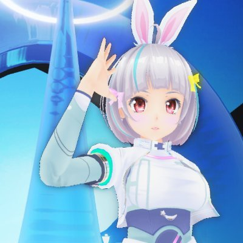
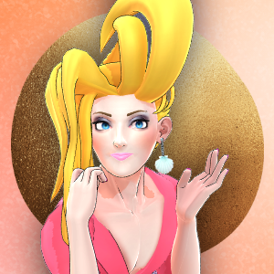

Vキャス、3度目の夏。
バーチャルで夏っぽいこと100個やってみた from 夏キャス2020

バーチャルキャストの「夏」をたくさん集めよう！
Vキャスに3度目の夏がやってきた！
去年よりも更に進化したVキャスで「夏っぽいもの」をたくさん集めてみよう！
最終日、まとめた動画をニコニコに投稿します！
参加方法
バーチャルキャスト内で「夏っぽいもの」を、スクショ or 10秒動画撮影！
撮った画像・動画を「#夏キャス #ネット超会議2020夏」をつけてTwitterに投稿しよう！
【#ネット超会議2020夏 ユーザー企画】
— 夏キャス2020📡 (@virtualcast_fes) August 7, 2020
「バーチャルで夏っぽいこと100個やってみた」
バーチャルキャストで夏っぽい「画像」や「動画」を
撮影したら、#夏キャス に投稿！
最終日、まとめた動画をニコニコに投稿します！#ユーザー企画応募 #バーチャルキャスト #夏キャス pic.twitter.com/5EG32NWg84
企画公式アカウント

夏キャス2020
@virtualcast_fes企画主

ベッラパスタ
@VR_pasta